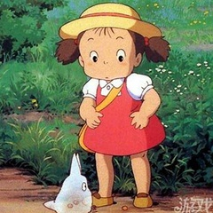
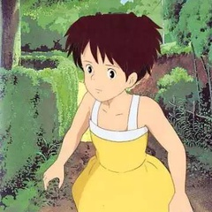
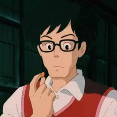
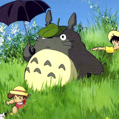

- 
-草壁梅（Mei）
坂本千夏配音
草壁皋月的妹妹，草壁梅性格更加活泼，她善于观察周遭有趣事物，但也常因冒失的举动让姐姐担心。由于年龄太小，她不能理解为什么妈妈没有按照约定回家陪自己玩，并决定自己跑去市里寻找妈妈。
- 
-草壁皋月
日高法子配音
草壁家中的长女，稍微年长的她在妈妈生病的时候充当着照顾妹妹的角色。但说到底草壁皋月依然是一个小女孩，所以她才能和妹妹一起看到大人看不见的龙猫。性格温顺的她是家中的“小大人”。
- 
-草壁达郎
糸井重里配音
草壁皋月和草壁梅的父亲，同时也是一位大学教授。在妻子生病之后他决定为住院后的妻子提前准备一个安静的环境，所以带着两个女儿搬到了乡下。草壁达郎工作忙碌而且要看望妻子，但是他始终对于两个女儿保持着关心。
- 
-龙猫
高木均配音
居住在森林中的巨大怪物。草壁梅独自一人在家中玩耍的时候，偶然进入森林之后发现了龙猫。龙猫乐观开朗，性格温顺，同样具有着精灵般的魔法的力量。他曾经帮助姐妹二人使种子发芽，还曾经帮助草壁皋月找回了迷路的草壁梅。